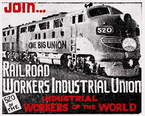

Chapter 4 - Some Questions Answered
Many discouraged railroad workers, dissatisfied with past and present conditions, are looking askance for relief in some new order. Some have declared for an independent organization. Careful analysis will prove such independents can only revert back to their same old ills. Fat jobs and false promises.
Others have heard vaguely of the I. W. W. and are asking—What is the I. W. W.?
In brief the I. W. W. is the Industrial Workers of the World. Founded in 1905 (Remember the date) by the Western Federation of Miners and other unions and with the aid of Eugene V. Debs.
Debs organized the firemen, the B. of R. T., the telegraphers, etc., and the American R.R. Union or A.R.U., which is really the parent I. W. W.
The A.R.U. was meant to include railroad men only, whereas the offspring, the I. W. W. is meant to include all workers around the entire globe.
What are the I. W. W. aims and purposes? To give economic strength to the workers and emancipation from wage slavery. How can this be done? Only by One Big Union.
Who are its leaders? There are none. The rank and file are the supreme authority.
How is organization work accomplished? By fellow worker committeemen elected by the rank and file.
How much pay do they get? The same pay, if any, as you get on the job—not one cent more.
What will keep them from selling out? The rank and file.
Any changes proposed or otherwise must be sanctioned and ratified by the rank and file. Any other means tried would expose him or them to the membership. The interests of the rank and file must be their interest as they will be returned to the job. If you do not get, they will not get.
How will younger workers fare? Roundhouse, shop, office employees and others will share equally in all benefits. Why? Because their bills are just the same as yours. Food, rent and clothing costs them the same.
What incentive then will a younger worker have to work for a bigger job or accept more responsibility? The same as any bunch of school boys in a sand-lot, all want to be pitchers. How will this affect seniority? It will not. Older men are entitled to their seniority rights and any easier or more desirable job. But not more pay. They are not more valuable to the boss than any other man. They may think so, but they are not. If they think so, they only delude themselves.
Engineers, Conductors, Yardmasters, Engine-foremen, General Car foremen, straw bosses must wake up and realize that only economic equality can help them, Until they do, they will have only their own inflated ego to nourish them and will have to continue to suffer rotten conditions and low pay, as a price for their blind self conceit. Why should they care about others getting the same benefits—unless blind jealousy and selfishness motivates them.
If they cannot concede this, then they are narrow minded, craven hearted, unmoral and utterly selfish. They do not deserve what they now enjoy and are mentally small for the position they now hold.
Their little authority, their little prestige will not be taken from them and they may indulge their vanity. The younger man may not want this but he does want and is entitled to the same pay and benefits and the right to enjoy the good things of life.
Now how do we vote? That is your business. What church or lodge must I belong to? That too is your business.
We do not believe in the destruction of food or property. Weare builders, not destroyers. Only frustrated feeble minds want to destroy. We teach economic equality, class freedom and emancipation from wage slavery.
We will not teach you any Hokus Pokus, we have no childish games, secret signs, grips, pass words or goat riding, to divert your minds from the union mission and NO insurance to sell. You will not listen to honeyed words, flattery or false promises, in order to soften and placate you.
You will be made aware that this is a tough world, a tough fight and you will be heartened and toughened for that fight with the knowledge that there will be no division of labor to scab on you. Every fellow worker with you and none against you. One for all and all for one.
You will have a voice and you will be heard. You will have a vote on what goes on and your vote will be counted.
It's all entirely up to you, if you want these things. If they mean something to you and your family, then get in and help roll the ball.
It is growing faster and faster every day and will grow and grow and grow until like a mighty tidal wave it will sweep the land and cleanse us of the parasites who now: exploit and do nothing for us except take our money and pass out some soothing oil that costs them nothing.
How soon can we do anything? That depends on you. The sooner you get in and lend your voice and support, the faster we move and the faster we grow. If you have manhood, you will want the better things of life for you, for your family and for your fellow worker, which you and they are entitled to.
It's up to you to get in and start punching. Are you afraid some one might call you a red? Remember! In 1905, Communism, as we now know it, was never heard of at that time. The Tsar was still the head of Russia. What was George Washington called?—Eugene Debs, Jack London? Remember, Debs organized the brotherhoods. If he was a red, then so are you, if you belong to the brotherhoods. Better be called a red, fellow worker, than yellow.
We are not making you any false promises. We do not intend to delude you—but this much we do promise and tell you that the I. W. W. theories and practices are proven sound and we can demonstrate that many I. W .W. theories are accepted and put into practice by big business and the C.I.O.
We intend to place ourselves where we belong, not at the bottom, as at present but at the top of the list. More pay, more leisure and better conditions.
Think how many times you have been asked to get your rest on an engine or in a caboose and run your eats. Remember an engine or caboose is not a lodging house or hotel.
Every man who does this or consents is injuring his health and scabbing on himself and fellow workers by providing a cheap train movement, as this is the only reason for asking you to perform such service. There is no emergency or shortage of crews to warrant this.
All the improved conditions and better things are yours to be had. But they must be won. They only await your pleasure, when you are ready to organize and fight for them by working together, giving your voice, your vote, your opinions and helping to educate, organize and initiate the rails into One Big Union. We intend to shower, with our messages, every division on the system, every railroad in the country, until all the railroad workers hear and know and understand our aims.
If you want to share your rightful heritage, you must join and fight for it. The sooner you do, the sooner we can arrive.
Think, Think, and ask yourself—am I really a union man at heart? Do I want to belong to a coffin club that masquerades as a union and only promises to bury me if I carry their insurance and pay for it?
Almost every great fight put up by railroad workers has been hampered and finally broken up by the fact that the men were divided along craft-union lines. Either honest differences of opinion, or desire for personal prestige, or just plain cowardice or corruption on the part of the leaders of this or that craft union have led to divided and weak action in the past, and they will inevitably lead to divided and weak action in the great struggles of the future if we do not have the vision and courage to separate ourselves from the old craft unions and unite into one big union.
Make your choice now fellow workers. Time was never more opportune and time is on the wing.
Beware! In a show down the hearts of American masters are cold enough to welcome the steel fist and the iron heel of Fascism.
To remain ignorant is to remain a slave.
Even a jackass would refuse to eat thistle and ragweed with clover all around.
The best is not too good and plenty is not too much for the workers.
The rich tell us that good hard work develops character and will power and good Americanism but why don't these voluntary loafers—if they believe this, leave their riches to science or charity and let their children start from scratch the same as you? Don't answer.